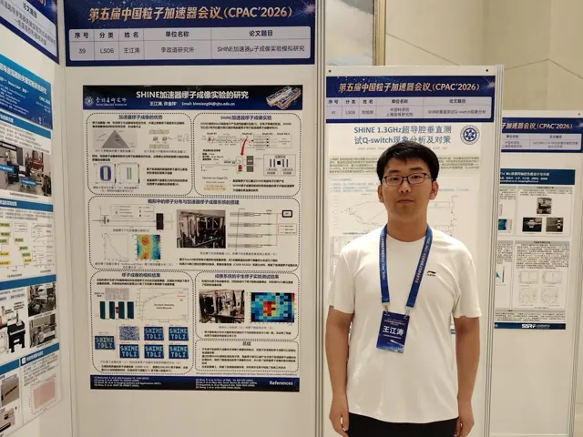
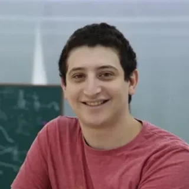
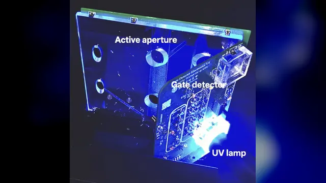
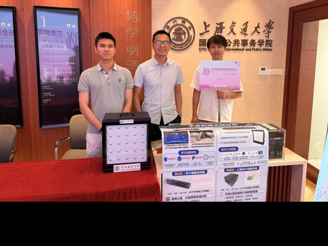
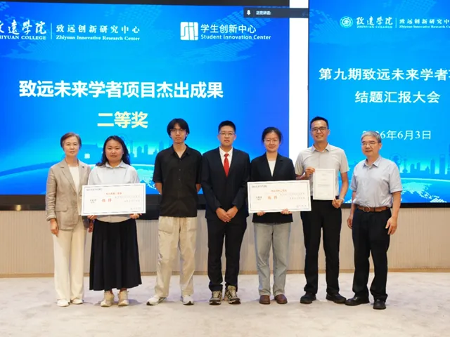
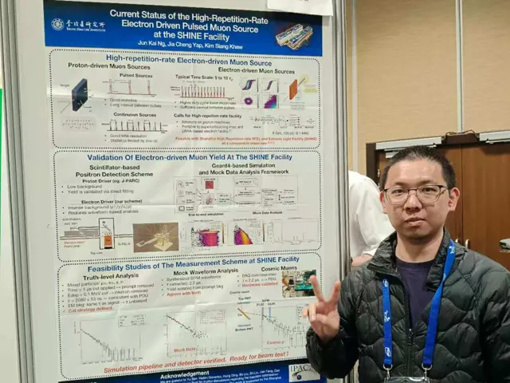
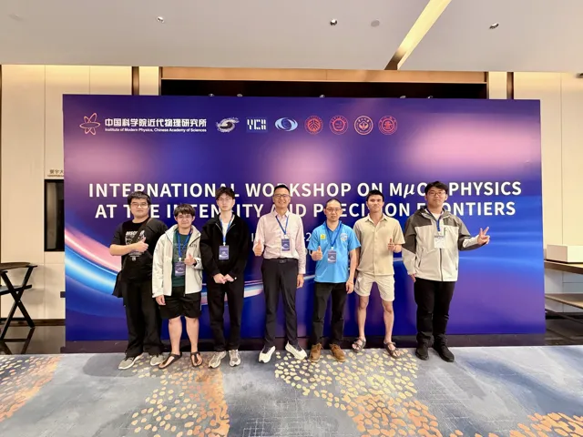
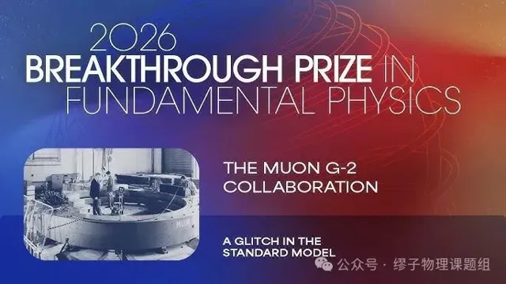
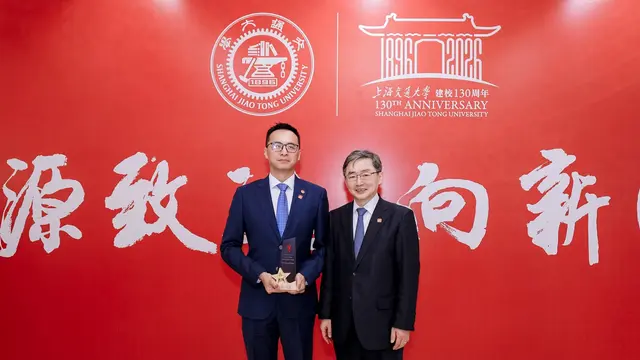

NEWSNews & events新闻动态
News & events新闻动态
120 stories from the group since 2019 — conferences, beam tests, workshops, people and papers.自2019年以来的120条课题组动态——会议、束流测试、研讨会、成员与论文。
-

Jiangtao Wang presents SHINE accelerator muography at CPAC’2026 in Chengdu王江涛在成都CPAC’2026会议上报告SHINE加速器缪子成像研究
From 12 to 15 October 2026, PhD student Jiangtao Wang【王江涛】 attended the 5th China Particle Accelerator Conference (CPAC’2026, 第五届中国粒子加速器会议) in Chengdu, Sichuan, organised by the pa…2026年10月12日至15日，博士研究生 王江涛 赴四川成都参加由中国物理学会、中国核学会粒子加速器分会主办的 第五届中国粒子加速器会议（CPAC’2026） ，并以墙报形式报告了 “SHINE加速器缪子成像实验的研究” （Study of an accelerator-based muography experiment at SHINE），作者为王江涛…
-

New members join the group in 20262026年课题组迎来新成员
Three new members joined our group in 2026. Welcome!2026年，课题组迎来三位新成员，欢迎加入！
-

NuFact 2026: The 27th International Workshop on Neutrinos from Accelerators, hosted at TDLI李政道研究所承办第27届加速器中微子国际研讨会（NuFact 2026）
From 31 August to 5 September 2026, our group hosted NuFact 2026, the 27th International Workshop on Neutrinos from Accelerators , at the Tsung-Dao Lee Institute (TDLI). It was the…2026年8月31日至9月5日，课题组在李政道研究所承办了 第27届加速器中微子国际研讨会（NuFact 2026） 。这是该系列会议首次在上海举办。许金祥担任大会主席及本地组委会主席，并共同召集第四工作组（缪子物理）。
-

Darwin Lo completes his summer research internship on muon scattering tomographyDarwin Lo完成缪子散射成像暑期科研实习
From 13 July to 23 August 2026, Darwin Lo from Imperial College London joined our group through the SJTU Summer Research Internship Program (Project 161: Fundamental and Applied Mu…2026年7月13日至8月23日，来自英国帝国理工学院的Darwin Lo通过上海交通大学暑期科研实习项目（项目161：基础与应用缪子物理）加入课题组，由许金祥指导。
-

Muon g-2 sets the tightest direct limit on the muon electric dipole momentMuon g-2实验给出迄今最严格的缪子电偶极矩直接限制
One year after its final measurement of the muon magnetic anomaly, the Muon g-2 Collaboration at Fermilab has reported a new search for a different property of the muon: its electr…在完成缪子反常磁矩最终测量一年后，美国费米国家加速器实验室（Fermilab）的Muon g-2合作组发布了针对缪子另一项性质——电偶极矩（EDM）——的最新搜寻结果。电偶极矩意味着缪子内部存在微小而永久的正负电荷分离。由于它破坏时间反演对称性和电荷—宇称（CP）对称性，标准模型预言其数值仅约10 −38 e ·cm，远低于任何实验的探测能力。因此，一旦观测…
-

Global Challenge Program 2026: muography field survey across Malaysia2026“全球挑战计划”：赴马来西亚开展缪子成像野外勘测
From 4 to 11 August 2026, a team from our group travelled across Peninsular Malaysia under the SJTU Global Challenge Program 2026 with the project “Muon imaging for non-destructive…2026年8月4日至11日，课题组团队依托上海交通大学2026年“全球挑战计划”（Global Challenge Program），以“缪子成像无损检测：跨国地质勘测”为项目主题，走访马来西亚半岛。团队由许金祥带队，11名学生来自李政道研究所、物理与天文学院等交大六个院系，足迹遍及槟城、怡保、吉隆坡、马六甲和柔佛。这也是课题组的便携式缪子探测器首次走出国门…
-

Our muEDM muon trigger detector paper is out in EPJC课题组 muEDM 缪子触发探测器论文发表于 EPJC
Our paper “Construction and characterization of a muon trigger detector for the PSI muEDM experiment” has been accepted in The European Physical Journal C (86, 911, 2026). 📄 Read t…课题组论文 《Construction and characterization of a muon trigger detector for the PSI muEDM experiment》 （PSI muEDM 实验缪子触发探测器的研制与性能测试）已被 The European Physical Journal C （86, 911, 2026）接收发…
-

Muon flux monitor exhibited at the 2026 International Conference on New Horizons in Emergency Management缪子通量监测仪亮相2026应急管理新视野国际会议
From 3 to 5 July 2026, Kim Siang Khaw, Yinghe Wang【王赢鹤】 , Guan Ming Wong【黄冠铭】 and Yonghao Zeng【曾永浩】 took part in the 2026 International Conference on New Horizons in Emergency Mana…2026年7月3日至5日，许金祥、 王赢鹤 、 黄冠铭 和 曾永浩 参加了 2026应急管理新视野国际会议（NHEM） 。会议在上海交通大学国际与公共事务学院举办，同期举行第39期“科技论剑”跨学科论坛。本届会议主题为 “驾驭不确定性：复合危机时代的韧性建设” 。
-

TDLI delegation visits Malaysia and Singapore to deepen joint PhD training李政道研究所代表团访问马来西亚和新加坡，深化博士研究生联合培养
From 17 to 22 June 2026, a Tsung-Dao Lee Institute (TDLI) delegation led by Director Academician Jie Zhang and Party Secretary Zhe Chen visited universities in Malaysia and Singapo…2026年6月17日至22日，李政道研究所所长张杰院士、党委书记Zhe Chen率代表团访问马来西亚和新加坡多所高校，围绕联合培养博士研究生、学术交流以及粒子与核物理、凝聚态物理、天文与天体物理等领域的合作开展交流。粒子与核物理研究部许金祥、凝聚态物理研究部钟瑞丹及研究生办公室副主任Ying Xi随团出访。
-

Our muography project wins First Prize at the 15th “Challenge Cup” Shanghai entrepreneurship competition课题组缪子成像项目获第十五届“挑战杯”上海市大学生创业计划竞赛一等奖
From 5 to 7 June 2026, the finals of the 15th “Challenge Cup” Shanghai College Students’ Entrepreneurship Plan Competition were held at the Jungong Road campus of the University of…2026年6月5日至7日，第十五届“挑战杯”上海市大学生创业计划竞赛决赛在上海理工大学军工路校区举行，上海交通大学捧得优胜杯。李政道研究所首次参赛，凭借课题组的缪子成像项目荣获一等奖。
-

Positronium project wins Second Prize at the 9th Zhiyuan Future Scholars Program正电子偶素项目荣获第九期致远未来学者项目杰出成果二等奖
Congratulations to Beining Rao【饶倍宁】 , Zeyu Luo【罗泽宇】 and Xuerui Liu【刘学睿】 ! Their project “Testing bound-state quantum electrodynamics with positronium and searching for new physics…祝贺 饶倍宁 、 罗泽宇 和 刘学睿 ！由许金祥指导的项目 “通过正电子偶素检验束缚态量子电动力学理论并且寻找超越标准模型的新物理” （Testing bound-state quantum electrodynamics with positronium and searching for new physics beyond the Standard M…
-

Jun Kai Ng presents the SHINE muon source at IPAC’26 in Deauville, France黄俊凯在法国多维尔IPAC’26上介绍SHINE缪子源
PhD student Jun Kai Ng【黄俊凯】 attended the 17th International Particle Accelerator Conference (IPAC’26) , held from 17 to 22 May 2026 at the Centre International de Deauville in Norm…博士研究生 黄俊凯 参加了 第十七届国际粒子加速器会议（IPAC’26） 。会议于2026年5月17日至22日在法国诺曼底多维尔国际会议中心举行，由GANIL-SPIRAL2联合CEA、CNRS、SOLEIL和ESRF共同主办。IPAC是加速器领域规模最大的国际会议。
-

International Workshop on Muon Physics at the Intensity and Precision Frontiers (MIP2026)强流与精密前沿缪子物理国际研讨会（MIP2026）
Our group took part in the International Workshop on Muon Physics at the Intensity and Precision Frontiers (MIP2026) , held from 24 to 28 April 2026 in Huizhou, Guangdong, and orga…2026年4月24日至28日，由中国科学院近代物理研究所主办的 强流与精密前沿缪子物理国际研讨会（MIP2026） 在广东惠州举行，课题组成员参加了此次会议，共作两个口头报告和三个墙报报告，内容涵盖课题组全部四个研究方向。
-

Muon g-2 Collaboration wins the 2026 Breakthrough Prize in Fundamental PhysicsMuon g-2合作组荣获2026年度基础物理学突破奖
The 2026 Breakthrough Prize in Fundamental Physics has been awarded to the Muon g-2 Collaborations — three generations of experiments at CERN, Brookhaven National Laboratory and Fe…2026年度基础物理学突破奖 授予缪子反常磁矩（Muon g-2）合作组——先后在欧洲核子研究中心（CERN）、布鲁克海文国家实验室和美国费米国家加速器实验室（Fermilab）开展的三代实验——以表彰其数十年来不断突破测量精度极限的开创性工作。300万美元奖金由376位研究人员共享，其中包括作为核心贡献团队之一的上海交通大学缪子物理团队成员。
-

Kim Siang Khaw receives the 2026 SJTU President’s Award许金祥荣获2026年上海交通大学校长奖
Kim Siang Khaw received the 2026 Shanghai Jiao Tong University President’s Award (上海交通大学校长奖). The award is the university’s highest honour for spiritual and civic achievement, reco…许金祥荣获 2026年上海交通大学校长奖 。校长奖是学校授予教职工的最高精神荣誉，旨在表彰在工作中充分体现交大精神的教职员工。
-

TDLI & INPAC Winter School in Particle Physics 20262026年李政道研究所-粒子与核物理研究所粒子物理冬季学校
Kim Siang was a lecturer at the Joint TDLI & INPAC Winter School in Particle Physics 2026 (27–31 January 2026, SJTU Minhang Campus and the TDLI building in Zhangjiang). On the open…许金祥担任2026年李政道研究所与粒子与核物理研究所（INPAC）联合粒子物理冬季学校授课教师（2026年1月27日至31日，上海交通大学闵行校区及张江李政道研究所大楼）。开幕当天，他作了题为“用缪子探索微观与宏观世界”的讲座，随后与何小刚教授共同参与问答交流环节。更多信息请见 活动页面 。
-

Particle Physics and Nuclear Physics Shanghai Symposium 20252025年粒子物理与核物理上海研讨会
Jiangtao Wang recently participated in the Particle Physics and Nuclear Physics Shanghai Symposium 2025, held at the University of Shanghai for Science and Technology (上海理工大学) from…2025年12月26日至28日，2025年粒子物理与核物理上海研讨会在上海理工大学举行，王江涛参加了此次会议。他代表上海交通大学缪子物理课题组作了题为“SHINE缪子源及其应用”（SHINE Muon Source and its Applications）的报告，重点介绍了课题组在缪子束流与缪子物理方面的工作。
-

SJTU Summer Research Internship Program 20262026年上海交通大学暑期科研实习项目
We are accepting students for the SJTU Summer Research Internship this summer! Our project is Fundamental and Applied Muon Physics, which covers the measurement of muon properties…课题组今年夏季将通过上海交通大学暑期科研实习项目招收学生！我们的项目为 基础与应用缪子物理，内容包括利用桌面实验测量缪子性质，以及利用缪子成像探测器进行三维密度成像 。 申请条件： – 申请人须已完成至少一年本科学习，且目前为在读本科生； – 申请人GPA须不低于3.0（4.0分制）或同等水平； – 来自非英语国家的申请人须提供英语水平证明。
-

The First Workshop on SHINE Muon Source and Its Applications (SMS 2025)首届 SHINE 缪子源及其应用研讨会（SMS 2025）
On November 28, 2025, the First Workshop on SHINE Muon Source and Its Applications (SMS 2025) was successfully held at the Tsung-Dao Lee Institute (TDLI), Shanghai Jiao Tong Univer…2025年11月28日，首届 SHINE 缪子源及其应用研讨会（SMS 2025）在上海交通大学李政道研究所顺利召开。本次会议由李政道研究所、中国科学院上海高等研究院和上海科技大学联合主办。
-

Test Beam 2025 at PSI for the Muon Trigger Detector2025年缪子触发探测器PSI束流测试
Our team recently took part in a test beam at PSI in December 2025 to evaluate the performance of the upgraded muon trigger detector developed for the muEDM experiment. This was ou…2025年12月，课题组赴瑞士保罗谢勒研究所（PSI）参加束流测试，检验为muEDM实验研制的升级版缪子触发探测器的性能。这是我们为muEDM项目在PSI开展的第三次束流测试，此次展示了专为强磁场和真空环境运行而设计的改进方案。
-

The 3rd National Muography Workshop第三届全国缪子成像技术与应用研讨会
Our group recently participated in the 3rd National Muography Workshop (第三届全国缪子成像技术与应用研讨会) , held at the University of South China (USC) in Hengyang (衡阳) from November 22 to 23, 20…2025年11月22日至23日， 第三届全国缪子成像技术与应用研讨会 在衡阳南华大学举行，课题组成员参加了此次会议。王赢鹤代表团队报告了上海交通大学缪子成像项目的最新进展；何守仁、陈铭扬和王江涛则以墙报形式分别介绍了上海外环隧道缪子成像项目和SHINE缪子成像装置项目的进展。研讨会汇聚了全国各研究所和高校的研究人员，围绕缪子成像技术及其应用的最新进展开展交流…
-

Muon Track Visualizer and Muon Flux Monitor are currently on display at TDLI!缪子径迹可视化装置与缪子通量监测器正在李政道研究所展出！
-

7 Summer Research Interns Completed Their Work in Our Group七名暑期科研实习生在课题组圆满完成实习
This summer, the Muon Physics Group at the Tsung-Dao Lee Institute (TDLI) had the pleasure of hosting seven talented students from around the world for internship projects under th…今年夏天， 李政道研究所缪子物理课题组 迎来了 七位来自世界各地的优秀学生 ，在 许金祥教授 的指导下开展实习项目。
-

The 7th Tianwen Forum on Particle Physics (第七届粒子物理天问论坛)第七届粒子物理天问论坛
From September 18 to 22, 2025, the 7th Tianwen Forum on Particle Physics (第七届粒子物理天问论坛) was held at China University of Geosciences in Wuhan. Co-hosted by several universities, incl…2025年9月18日至22日， 第七届粒子物理天问论坛 在中国地质大学（武汉）举行。论坛由湖南大学、中南大学等多所高校联合主办，旨在加强学术合作，探讨粒子物理的未来发展方向及我国重大科学工程的规划布局。会议议程涵盖众多实验平台以及该领域最新的交叉研究进展。
-

Our paper on the Shanghai Outer Ring Tunnel Muography is out!上海外环隧道缪子成像研究论文正式发表！
We are thrilled to announce that our latest research paper, “Towards Non-Invasive Sediment Monitoring Using Muography: A Pilot Run at the Shanghai Outer Ring Tunnel,” has been publ…我们很高兴地宣布，课题组最新研究论文 《利用缪子成像实现非侵入式泥沙监测：上海外环隧道先导试验》（Towards Non-Invasive Sediment Monitoring Using Muography: A Pilot Run at the Shanghai Outer Ring Tunnel） 已发表于 Journal of Applied Ph…
-

Physics of Fundamental Symmetries and Interactions (PSI 2025)基本对称性与相互作用物理研讨会（PSI 2025）
Beining Rao from our group recently participated in the Physics of Fundamental Symmetries and Interactions – PSI2025 workshop (September 7–12, 2025, Paul Scherrer Institute, Switze…课题组 饶倍宁 近日参加了在瑞士保罗谢勒研究所（PSI）举行的 基本对称性与相互作用物理研讨会（PSI2025） （2025年9月7日至12日）。该研讨会聚焦利用PSI独特装置开展的现有及未来高精度低能物理研究，这些装置包括世界上最强的质子回旋加速器、高强度低动量缪子束流和超冷中子源，会议也涵盖了与之互补的其他实验途径。饶倍宁以“Testing QED an…
-

Particle Physics on Tabletops (PPTT 2025)桌面粒子物理研讨会（PPTT 2025）
Members of our group recently participated in the PPTT 2025 workshop, held in Dujiangyan, Chengdu, from 1 to 6 September 2025. The workshop, on Particle Physics on Tabletops, broug…近日，课题组成员参加了2025年9月1日至6日在成都都江堰举行的 PPTT 2025 研讨会。本次“桌面粒子物理”（Particle Physics on Tabletops）研讨会汇聚了来自不同领域的专家，共同探讨利用桌面实验探索基础粒子物理的潜力，推动这一新兴领域的跨学科与国际合作。
-

Cosmic-ray Muography System (CMS) Now Online and Begins First Muon Radiography Measurements at TDLI宇宙线缪子成像系统（CMS）正式上线，在李政道研究所开展首次缪子透射成像测量
The Cosmic-ray Muography System (CMS), developed by the TDLI Muon Physics Group, is now online and has begun taking data in radiography mode. The system consists of three tracking…由李政道研究所缪子物理课题组研制的宇宙线缪子成像系统（CMS）现已正式上线，并开始以透射成像模式采集数据。该系统由三层径迹探测层组成，每层由1.5 cm宽的三角形闪烁体条构成，并由硅光电倍增管（SiPM）读出，有效面积约为50 cm × 50 cm。结合CAEN公司的A5202前端电子学，CMS构成了一个紧凑、模块化、高分辨率的缪子成像平台。 课题组在李政道…
-

The Flavor Physics Conference 2025: A Gathering of Minds in Particle Physics2025年味物理会议：粒子物理学者的思想盛会
The Flavor Physics Conference is held every three years, bringing together particle physicists from around the world to discuss the latest developments, challenges, and future dire…味物理会议（Flavor Physics Conference） 每三年举办一次，汇聚世界各地的粒子物理学家，共同探讨理解标准模型及超出标准模型新物理的最新进展、挑战与未来方向。
-

Fast Muon Trigger System Prototype Readied for PSI’s muEDM Experiment面向PSI muEDM实验的快速缪子触发系统原型研制完成
Two new studies mark key milestones toward the world’s most sensitive search for the muon electric dipole moment.两项最新研究标志着向世界最灵敏的缪子电偶极矩搜寻迈出关键步伐。
-

Final results from the Muon g-2 experiment at Fermilab费米实验室缪子 g-2 实验发布最终结果
The Fermilab Muon g-2 experiment announced its final results at 11:00 PM Beijing time on June 3. The new measurement agrees closely with the results published in 2021 and 2023 and…北京时间6月3日晚11点，美国费米国家加速器实验室（Fermilab）缪子 g-2 实验发布最终结果。新测量结果与2021年和2023年发表的结果高度吻合，精度达到前所未有的127 ppb（十亿分之一），超越了140 ppb的原定目标，是迄今为止对缪子反常磁矩最精确的测量。尽管近期的理论计算削弱了缪子 g-2 中新物理的迹象，但这一高精度实验结果仍对标准模型…
-

The 16th International Particle Accelerator Conference (IPAC’25)第十六届国际粒子加速器会议（IPAC’25）
Dr. Yusuke Takeuchi recently attended the 16th International Particle Accelerator Conference (IPAC’25) , held in Taipei from June 1 to 6, 2025. IPAC is the largest conference in th…竹内佑甫博士近日参加了2025年6月1日至6日在台北举行的 第十六届国际粒子加速器会议（IPAC’25） 。IPAC是加速器领域规模最大的国际会议，本届参会人数达1000人。他展示了关于缪子源设计研究的墙报，题为“基于电子加速器的kHz–MHz重复频率脉冲缪子源设计研究”。会议详情请访问 https://ipac25.org/ 。
-

The 30th International Workshop on Weak Interactions and Neutrinos (WIN 2025)第30届弱相互作用与中微子国际研讨会（WIN 2025）
From June 9 to 13, 2025, the 30th International Workshop on Weak Interactions and Neutrinos (WIN 2025) was held at the University of Sussex, UK. One of the prominent conferences in…2025年6月9日至13日， 第30届弱相互作用与中微子国际研讨会（WIN 2025） 在英国萨塞克斯大学举行。WIN是粒子物理领域的重要会议之一，汇聚世界各地的研究人员，探讨弱相互作用、中微子物理及相关领域的最新进展与前沿挑战。
-

Open Lab Day at TDLI 20252025年李政道研究所实验室开放日
We’re proud to have joined the 2025 Open Lab Day— “Touching the Invisible Dimensions of the Universe” —hosted by our institute in Zhangjiang. Our team (Jiangtao, Jun Kai, Xingyun,…我们很荣幸参与了李政道研究所在张江举办的2025年实验室开放日—— “触摸宇宙的隐秘维度” 。团队成员（王江涛、黄俊凯、黄幸运、王赢鹤、曾永浩）带来了 云室 和 火花室 两件互动展品，将粒子物理的奥秘生动呈现，吸引了200多名观众！
-

International Workshop on Muon Physics at the Intensity and Precision Frontiers (MIP2025)强度与精度前沿缪子物理国际研讨会（MIP2025）
Our group recently participated in the MIP2025 workshop, held at Hunan University in Changsha from May 17 to 19. Kim Siang chaired the muon bound-state session, while three group m…近日，课题组参加了5月17日至19日在长沙湖南大学举行的 MIP2025 研讨会。许金祥主持了缪子束缚态分会，课题组三位成员（竹内佑甫、黄冠铭和 Siew Yan）分别作大会报告，介绍了上海缪子源、muEDM 实验以及面向教育、科研与科普的上海 METRO 平台的相关工作。更多会议信息请访问 https://indico.ihep.ac.cn/event/2…
-

SJTU Summer Research Internship Program 20252025年上海交通大学暑期科研实习项目
We are accepting students for the SJTU Summer Research Internship this summer! Our project is Fundamental and Applied Muon Physics: measurement of muon properties using tabletop ex…课题组今年夏天将通过上海交通大学暑期科研实习项目招收学生！我们的项目是 基础与应用缪子物理：利用桌面实验测量缪子性质，以及利用缪子成像探测器进行三维密度成像 。 申请条件： – 已完成至少一年本科学习，且目前为在读本科生； – GPA不低于3.0（4.0制）或同等水平； – 来自非英语国家的学生须提供英语水平证明。
-

Workshop on a Particle and Nuclear Physics Platform Based on SHINE’s High-Energy, High-Current Polarized Electron Beam基于SHINE高能强流极化电子束的粒子物理核物理平台建设研讨会
Kim Siang recently participated in the Workshop on the Development of a Particle and Nuclear Physics Platform Based on SHINE’s High-Energy, High-Current Polarized Electron Beam, he…2025年4月12日至13日，基于SHINE高能强流极化电子束的粒子物理核物理平台建设研讨会在复旦大学举行，许金祥应邀参会。他作了关于用于研究量能器缪子排除率的缪子成像系统的报告，并介绍了SHINE缪子源。会议详情请见：https://imp.fudan.edu.cn/10/de/c45420a725214/page.htm。
-

QUP 2025 WorkshopQUP 2025研讨会
Kim Siang and Guan Ming participated in the QUP 2025 workshop, held at KEK, Japan, on April 8–10, 2025. QUP stands for the International Center for Quantum-field Measurement System…许金祥与黄冠铭参加了2025年4月8日至10日在日本高能加速器研究机构（KEK）举行的QUP 2025研讨会。QUP全称为“宇宙与粒子研究量子场测量系统国际中心”（International Center for Quantum-field Measurement Systems for Studies of the Universe and Particl…
-

1st Europe-China-Japan Workshop on Muon Physics第一届欧洲—中国—日本缪子物理研讨会
Our group participated in the 1st Europe-China-Japan Workshop on Muon Physics , held at the Minhang campus of Shanghai Jiao Tong University on 24–25 March 2025. Kim Siang gave a ta…2025年3月24日至25日，课题组参加了在上海交通大学闵行校区举行的 第一届欧洲—中国—日本缪子物理研讨会 。许金祥作了关于 SHINE 缪子源的报告，介绍了该项目的最新进展。会后，与会者在 SHINE 合作者的陪同下参观了上海光源（SSRF）和 SHINE 装置。本次研讨会取得圆满成功，围绕缪子物理激发了许多富有启发的讨论。更多会议信息请见： https…
-

The 6th KMI International Symposium (KMI2025)第六届KMI国际研讨会（KMI2025）
Kim Siang was invited to present the current status of the Fermilab Muon g-2 and PSI muEDM experiments at the 6th KMI International Symposium – “Quest for the Origin of Particles a…2025年3月5日至7日，第六届KMI国际研讨会“探寻粒子与宇宙的起源”（KMI2025）在名古屋大学小林-益川研究所举行，许金祥应邀介绍了费米实验室Muon g-2实验和PSI muEDM实验的最新进展。研讨会详情请见： https://indico.kmi.nagoya-u.ac.jp/event/10/ 。
-
TDLI & INPAC Winter School in Particle Physics 20252025年李政道研究所—INPAC粒子物理冬令营
Kim Siang was a lecturer at the TDLI & INPAC Winter School in Particle Physics 2025 (January 20–24, 2025, Shanghai). The school was aimed at undergraduate students interested in pa…许金祥受邀担任2025年李政道研究所—粒子与核物理研究所（INPAC）粒子物理冬令营（2025年1月20日至24日，上海）讲师。本次冬令营面向对粒子物理感兴趣、且已完成至少一年大学物理课程学习的本科生。他作了题为“从缪子产生、缪子研究到缪子应用”（From muon production, muon research to muon applications…
-

Particle Physics and Nuclear Physics Shanghai Symposium 20242024年粒子物理与核物理上海研讨会
Dr. Siew Yan Hoh recently participated in the Particle Physics and Nuclear Physics Shanghai Symposium 2024, held at Fudan University from December 20 to 22. Representing the Muon P…何守仁博士近日参加了2024年12月20日至22日在复旦大学举行的2024年粒子物理与核物理上海研讨会。Hoh博士代表上海交通大学缪子物理课题组作了题为“上海交大缪子物理研究进展”的报告，介绍了课题组在缪子物理领域的工作。
-

National Physics Conference of Malaysia (PERFIK 2024)2024年马来西亚全国物理学大会（PERFIK 2024）
Hoh Siew Yan recently participated in the National Physics Conference 2024 (PERFIK 2024) , held in Malaysia from November 3 to 8, 2024. Representing the group, Hoh gave two present…近日，Hoh Siew Yan 参加了2024年11月3日至8日在马来西亚举行的 2024年马来西亚全国物理学大会（PERFIK 2024） 。他代表课题组作了两场报告，展示了团队在基础研究和教育科普两方面正在开展的工作。
-

Test beam at PSI for muon trigger detector缪子触发探测器PSI束流测试
From late October to early November 2024, our group took part in a test beam campaign at PSI to evaluate the performance of the prototype muon trigger detector developed for the mu…2024年10月下旬至11月初，课题组赴瑞士保罗谢勒研究所（PSI）参加束流测试，检验为muEDM实验研制的缪子触发探测器原型的性能。这是我们为muEDM项目在PSI开展的第二次束流测试，此次测试了专为强磁场环境运行而改进的设计方案。
-

Muography Workshop 20242024年缪子成像研讨会
Kim Siang recently participated in the Muography Workshop 2024, held in Santa Fe, New Mexico, USA, from November 4–8. He presented the latest progress of the Shanghai Muography Pro…2024年11月4日至8日，2024年缪子成像研讨会（Muography Workshop 2024）在美国新墨西哥州圣塔菲举行，许金祥参加了此次会议，并报告了与上海市规划和自然资源局合作开展的上海缪子成像项目的最新进展。研讨会汇聚了来自高校和研究机构的研究人员分享各自进展，业界代表也展示了其商业策略和最新产品。除缪子探测技术的进展外，与会者还在地质学和考古…
-

Chinese Muography Workshop 20242024年中国缪子成像研讨会
Yonghao recently participated in the Chinese Muography Workshop 2024, hosted by the University of Science and Technology of China (USTC) in Hefei from November 7 to 9, 2024. Repres…曾永浩近日参加了2024年11月7日至9日由中国科学技术大学在合肥主办的2024年中国缪子成像研讨会，代表课题组报告了上海缪子成像项目的最新进展。研讨会汇聚了全国各高校和科研院所的研究人员，围绕缪子成像技术的最新发展及其广泛应用开展交流，为缪子探测、电子学和成像算法领域的专家搭建了促进合作、碰撞思想、明确研究方向的平台。会议亮点之一是中国科学技术大学团队展示…
-

NuFact 2024: The 25th International Workshop on Neutrinos from Accelerators第25届加速器中微子国际研讨会（NuFact 2024）
Kim Siang participated in the NuFact 2024 conference (September 16–21) at Argonne National Laboratory, both as a convener of Working Group 4 (Muon Physics) and as a speaker on the…9月16日至21日，许金祥参加了在美国阿贡国家实验室举行的 NuFact 2024 会议，担任第四工作组（缪子物理）召集人，并作了关于 PSI muEDM 实验现状的报告。时隔五年再次赴美，并与来自日本、欧洲和美国的许多老朋友重聚，令人十分欣喜。除了丰富的物理议程外，会议还安排参观了 DUNE 阴极生产工厂、阿贡尾场加速器（AWA）、先进光子源（APS）以及…
-

Pujiang Innovation Forum 2024浦江创新论坛2024
On 7 September, the 2024 Pujiang Innovation Forum (the 17th) opened at the Zhangjiang Science Hall in Shanghai and ran until 10 September. The theme of the forum was “Shared Innova…9月7日， 2024浦江创新论坛（第十七届） 在上海张江科学会堂开幕，并持续至9月10日。论坛主题为“共享创新 共塑未来：构建科技创新开放环境”。主宾国匈牙利总统舒尤克·道马什向论坛致贺信。上海市委书记陈吉宁出席开幕式并致辞，中国科学技术协会主席万钢、科技部部长阴和俊作主旨演讲。上海市委副书记、市长龚正主持开幕式。本届论坛邀请了300余位来自国际组织、顶尖高…
-

Simon Eidelman School on Muon Dipole Moments and Hadronic EffectsSimon Eidelman缪子偶极矩与强子效应学校
Our group actively participated in the prestigious Simon Eidelman School on Muon Dipole Moments and Hadronic Effects, hosted by the Kobayashi-Maskawa Institute at Nagoya University…2024年9月2日至6日，由名古屋大学小林·益川研究所（KMI）主办的Simon Eidelman缪子偶极矩与强子效应暑期学校举行，课题组积极参与。竹内 佑甫、何守仁、曾永浩和刘方超在墙报环节展示了各自在SHINE缪子源和Muon g-2实验方面的最新研究。值得一提的是，何守仁关于Muon g-2量能器能量刻度的工作荣获最佳墙报奖！ 学校详情请见 https…
-

ICHEP 2024: 42nd International Conference on High Energy PhysicsICHEP 2024：第42届国际高能物理大会
Kim Siang recently participated in the ICHEP 2024 conference (July 17–24) at the Prague Congress Centre in Prague, Czech Republic. Representing the Fermilab Muon g-2 collaboration,…许金祥近日参加了在捷克布拉格会议中心举行的ICHEP 2024第42届国际高能物理大会（7月17日至24日）。他代表费米实验室Muon g-2合作组在夸克与轻子味物理分会场作了题为“ 费米实验室Muon g-2实验Run-2/3缪子反常磁矩测量 ”的报告，并展示了题为“ 缪子反常磁矩测量中的束流动力学修正 ”的墙报。此行收获颇丰：他了解了领域最新进展，汲取了…
-

Exhibition at the Shanghai Natural History Museum上海自然博物馆科技展览
Our group recently took part in an exhibition showcasing science and technology (S&T) innovations from Shanghai Jiao Tong University (SJTU). The exhibition was specially arranged t…近日，课题组参加了上海交通大学科技创新成果展。此次展览专为庆祝上海交通大学与上海科技馆携手推动科技创新与科学普及而举办。我们借此机会向公众展示了课题组新研制的缪子成像探测器及其实时 LED 事例显示板，吸引了众多观众，尤其是青少年的关注。我们希望推广这项技术，用于城市地下结构成像，助力防灾减灾。7月11日至12日，黄俊凯、胡天齐、Yingying 和 Sie…
-

Jun Kai NG successfully defends his Master’s thesis黄俊凯顺利通过硕士学位论文答辩
Jun Kai NG (黄俊凯) successfully defended his Master’s thesis, “Validation of the Calorimeter Acceptance Model in the Fermilab Muon g-2 Experiment”, on 12 May 2024. The whole team con…2024年5月12日，黄俊凯顺利通过硕士学位论文答辩，论文题为“费米实验室Muon g-2实验中量能器接受度模型的验证”。全组同仁向他表示祝贺！他已获得国家留学基金委（CSC）博士奖学金（2024–2028），将继续留在课题组攻读博士学位，从事SHINE缪子源项目研究。
-

Yimin Wan and Xingyun Huang have successfully defended their Bachelor’s theses万一民、黄幸运顺利通过本科毕业论文答辩
Yimin Wan (万一民) and Xingyun Huang (黄幸运) successfully defended their Bachelor’s theses on 4 June 2024. They worked on “Design and Construction of Spark Chamber Frame Structure, Gas…2024年6月4日，万一民和黄幸运顺利通过本科毕业论文答辩，论文题目分别为“火花室框架结构、气体系统与相机系统的设计与搭建”和“基于火花室的缪子质量测量”。课题组全体成员向他们表示祝贺！黄幸运将留在课题组攻读博士学位，从事PSI muEDM项目研究；万一民将进入中国科学院上海高等研究院，攻读微电子学与固体电子学硕士学位。
-

Workshop on Muon Physics at the Intensity and Precision Frontiers (MIP2024)强度与精度前沿缪子物理研讨会（MIP2024）
Our group recently participated in the MIP2024 workshop at Peking University, Beijing, on April 20–21, 2024. Kim Siang chaired the precision measurement session, while three group…2024年4月20日至21日，课题组参加了在北京大学举行的强度与精度前沿缪子物理研讨会（MIP2024）。许金祥主持了精密测量分会，竹内 佑甫、何守仁和黄冠铭三位成员作了大会报告，另有九位成员展示了墙报。刘方超、黄俊凯和尚雨芝分别凭借上海缪子源、Muon g-2实验和muEDM实验相关工作荣获最佳墙报奖，祝贺他们！研讨会详情请见 https://indico…
-

Workshop on Scientific Applications and Key Technologies of the SHINE Electron BeamSHINE电子束流科学应用与关键技术研讨会
Our group recently participated in the Workshop on Scientific Applications and Key Technologies of the SHINE Electron Beam (SHINE电子束流科学应用与关键技术研讨会) on April 1–2. Kim Siang gave a ta…4月1日至2日，课题组参加了 SHINE电子束流科学应用与关键技术研讨会。许金祥作了关于基于 SHINE 的缪子源及其应用的报告。李政道研究所其他多位成员也出席了会议，并全面参观了 SHINE 装置。SHINE 的建设进展令我们倍感振奋！
-

Lanzhou Trip for Muon Physics Exchange兰州缪子物理学术交流之行
On March 3–4, Kim Siang visited Lanzhou for the first time for an academic exchange on muography with Prof. Zhiyi Liu’s group, accompanied by several officials from the Shanghai go…3月3日至4日，许金祥在上海市政府多位相关负责同志的陪同下首次赴兰州，与刘志毅教授团队就缪子成像开展学术交流。他还在中国科学院近代物理研究所作了缪子物理学术报告，并深入参观了近代物理所的加速器装置，令人大开眼界。此行收获颇丰：我们从刘教授团队学到了许多缪子成像方面的经验，并与兰州大学和近代物理所就未来合作进行了深入探讨。期待下一次的访问！
-

SJTU Summer Research Internship Program 20242024年上海交通大学暑期科研实习项目
We are accepting students for the SJTU Summer Research Internship this summer! Our project is the measurement of muon properties using tabletop setups in our laboratory at the Tsun…课题组正在招收今年上海交通大学暑期科研实习项目的学生！我们的项目为在李政道研究所实验室中 利用桌面实验装置测量缪子性质 。 申请条件： – 申请人须已完成至少一年本科学习，且目前为在读本科生； – 申请人GPA须不低于3.0（4.0分制）或同等水平； – 来自非英语国家的申请人须提供英语水平证明。 项目时间为2024年7月1日至8月11日，申请截止日期为5月…
-

2023 Joint Meeting of the Academic Committees of the Shanghai and MOE Key Laboratories上海市和教育部重点实验室2023年度学术委员会联席会议
Kim Siang represented the accelerator-based particle physics experimental group in the annual report to the Key Laboratory of Shanghai and the MOE. In his presentation, he describe…许金祥代表加速器粒子物理实验组在上海市和教育部重点实验室年度学术委员会会议上作工作汇报，介绍了实验组在三个主要方向上的进展：对撞机实验（ATLAS和CEPC）、固定靶实验（Dark SHINE）以及储存环实验（Muon g-2和muEDM）。2023年各项工作取得了长足进展，期待2024年再创佳绩！
-

27th J-PARC Muon g-2/EDM collaboration meeting at Niigata University第27届 J-PARC 缪子 g-2/EDM 合作组会议在新潟大学举行
Meng attended the 27th J-PARC Muon g-2/EDM Collaboration Meeting at Niigata University and gave a talk on the status of the muon polarization monitor. Exchanges between the Shangha…吕濛参加了在新潟大学举行的第27届 J-PARC 缪子 g-2/EDM 合作组会议，并作了关于缪子极化监测器进展的报告。上海缪子物理课题组与 KEK/J-PARC 缪子物理团队之间的交流已日益常态化，期待未来双方开展更加紧密的合作！
-

2023 Shanghai Particle and Nuclear Physics Annual Meeting2023年粒子物理与核物理上海研讨会
Kim Siang and Tianqi gave talks on the Shanghai Muon Source and the PSI muEDM experiment at the Shanghai Particle and Nuclear Physics Annual Meeting, held at Tongji University. It…许金祥和胡天齐在同济大学举行的粒子物理与核物理上海研讨会上分别作了关于上海缪子源和PSI muEDM实验的报告。这是展示课题组研究进展、结识本地区物理同行的良好机会。
-

《致交论道》 (Zhiyuan College talk), Dec 2023《致交论道》 2023年12月
Kim Siang was invited to speak at the 《致交论道》 event organized by Zhiyuan College, SJTU. The topic of discussion was “What is the new physics behind the N-th decimal place?”许金祥应邀出席上海交通大学致远学院主办的《致交论道》活动，主题为“小数点后第N位背后的新物理是什么？”
-

ICFA Seminar 2023ICFA研讨会2023
Kim Siang was recently invited to give an overview talk on electromagnetic dipole moments at the ICFA Seminar 2023 on “Future Perspectives in High-Energy Physics”, held at DESY in…许金祥近日应邀在2023年11月27日至12月1日于德国汉堡电子同步加速器研究所（DESY）举行的ICFA研讨会2023（主题：“高能物理的未来展望”）上作电磁偶极矩综述报告。该研讨会是聚焦粒子物理未来装置规划的国际交流会议，仅限受邀参加，与会者包括全球大多数主要粒子物理实验室的负责人、资深粒子物理与加速器物理学家，以及多个国家的政府科技官员。会议详情请见：…
-

MELODY 2023首届缪子科学技术与产业研讨会（MELODY 2023）
Our group recently participated in the first Workshop on Muon Science Technology and Industry (MELODY 2023), held from 3 to 6 November 2023 at the China Spallation Neutron Source (…近日，课题组参加了2023年11月3日至6日在中国散裂中子源（CSNS）举行的首届缪子科学技术与产业研讨会（MELODY 2023）。许金祥介绍了课题组在上海缪子源、费米实验室缪子 g-2 实验和 PSI muEDM 实验方面的工作。这些进展离不开课题组全体成员的辛勤付出！更多会议信息请见： https://indico.ihep.ac.cn/event/2…
-

Faculty-student exchange session at the Zhiyuan Innovative Research Center (ZIRC) 20242024年“致远学者研究计划”师生交流会
On Oct 25, 2023, Kim-Siang presented a poster on “Precise measurements of muon properties and muon factory” at the faculty-student exchange session (2024年“致远学者研究计划”师生交流会) of the Zh…2023年10月25日，许金祥在致远创新研究中心（ZIRC）举办的2024年“致远学者研究计划”师生交流会上展示了题为“缪子性质的精密测量与缪子工厂”的墙报。活动原始报道见： https://zhiyuan.sjtu.edu.cn/html/zhiyuan/news_view.php?id=4001 。
-

6th Zhiyuan Future Scholars Program (Midterm) Report Meeting第六期致远未来学者项目(中期)汇报会
Meng successfully defended the team’s Zhiyuan Scholar project at the annual report meeting. Congratulations to the team (Meng Lyu, Xintong Cai, Fangyuan Yu and Siyuan Chen) on comp…吕濛在年度汇报会上代表团队顺利完成了致远学者项目的答辩。祝贺团队（吕濛、蔡欣桐、俞方远和陈思元）圆满完成这一出色的项目！会议原始报道请见： https://zhiyuan.sjtu.edu.cn/html/zhiyuan/news_view.php?id=3999 。
-

The 3rd Asian-European-Institutes Workshop for BSM第三届亚欧研究所超出标准模型物理研讨会
Kim Siang was invited to present the latest results of the Fermilab Muon g-2 experiment at the 3rd Asian-European-Institutes (AEI) Workshop for BSM, held from 3 to 6 October 2023 a…许金祥应邀出席2023年10月3日至6日在日本群马县著名温泉胜地伊香保举行的第三届亚欧研究所超出标准模型物理研讨会（AEI Workshop for BSM），报告了费米实验室Muon g-2实验的最新结果。研讨会详情请见： https://conference-indico.kek.jp/event/234/ 。
-

NuFact 2023: The 24th International Workshop on Neutrinos from Accelerators第24届加速器中微子国际研讨会（NuFact 2023）
Our group participated in the NuFact 2023 workshop at Seoul National University, giving technical talks on the Fermilab Muon g-2 experiment (Kim Siang) and the PSI muEDM experiment…课题组参加了在首尔大学举行的 NuFact 2023 研讨会，分别作了关于费米实验室缪子 g-2 实验（许金祥）和 PSI muEDM 实验（黄冠铭）的技术报告。黄俊凯还以墙报形式展示了 muEDM 项目2022年11月束流测试的结果。能与来自日本、欧洲和美国的许多老朋友重聚，十分难得。除了丰富的物理议程外，主办方还安排了半天的首尔参观活动。我们参观了著名的…
-

Muon g-2 Physics Week at Liverpool 20232023年Muon g-2合作组利物浦物理周
Kim Siang attended the Muon g-2 collaboration’s Physics Week in Liverpool, his first in-person Physics Week since joining TDLI in 2019. He presented the current status of the SJTU…许金祥参加了在英国利物浦举行的Muon g-2合作组物理周，这是他自2019年加入李政道研究所以来首次线下参加物理周。他汇报了上海交通大学团队在进动频率分析方面的最新进展，共同组织了进动频率分析研讨会，并在束流动力学研讨会上作了关于探测器接受度的报告。这些成果离不开陈程、曾永浩和黄俊凯过去几个月来的持续贡献。
-

SUT-PSI School of Muon and Neutron PhysicsSUT-PSI缪子与中子物理学校
From July 10 to 14, our young research team had the privilege of attending the SUT-PSI School of Muon and Neutron Physics , hosted by Suranaree University of Technology (SUT) in Th…7月10日至14日，课题组的青年科研团队有幸参加了由泰国苏兰拉里理工大学（SUT）主办的 SUT-PSI缪子与中子物理学校 。课程设置精心，理论与实践相结合，旨在激发求知欲、加深我们对低能粒子物理的理解。 课程包括大量讲座，介绍缪子和中子在低能粒子物理中扮演的多重角色，并配有粒子物理模拟与分析现行方法的上机实践课程。此外，学员们还参观了该地区科学进步与创新的…
-

WIN 2023: 29th International Workshop on Weak Interactions and NeutrinosWIN 2023：第29届弱相互作用与中微子国际研讨会
Cheng participated in the WIN 2023 workshop at the beautiful Zhuhai Campus of Sun Yat-sen University in Guangdong Province, where he presented the current status of the Muon g-2 ex…陈程参加了在风景优美的中山大学珠海校区（广东省）举行的WIN 2023研讨会，并代表合作组报告了Muon g-2实验的最新进展。会议详情请见： https://indico.ihep.ac.cn/event/18269/ 。
-

Muon Beam Physics and Applications Workshop 2023缪子束物理与应用研讨会2023
Kim Siang took part in the Muon Beam Physics and Applications Workshop, held on June 19–20 at the newly built Huizhou campus of the Institute of Modern Physics (IMP), Chinese Acade…6月19日至20日，许金祥参加了在中国科学院近代物理研究所新建成的惠州园区举行的缪子束物理与应用研讨会，并在会上介绍了他提出的基于上海高重频硬X射线自由电子激光装置（SHINE）的高重频脉冲缪子源构想。参观先进的近代物理研究所园区和在建装置，使此行既富有启发又十分愉快。
-

J-PARC Muon g-2/EDM collaboration meeting and New Physics ForumJ-PARC Muon g-2/EDM合作组会议与新物理论坛
From June 11 to 15, our team members Tianqi Hu, Jun Kai Ng, and Yonghao Zeng made their first trip to Japan. During the visit, they took part in academic activities at KEK, J-PARC,…6月11日至15日，课题组成员胡天齐、黄俊凯和曾永浩首次赴日本访问。访问期间，他们在KEK、J-PARC和御茶水女子大学参加了一系列围绕缪子物理及超出标准模型新物理的学术活动（包括6月13日的 第24届新物理论坛 ），并在为上海交通大学来访者专门设置的环节中作了大会报告。以下是他们的访问感想：
-

PPC 2023: XVI International Conference on Interactions between Particle Physics and CosmologyPPC 2023：第十六届粒子物理与宇宙学交叉国际会议
Kim Siang recently took part in the PPC 2023 conference (Jun 12 – 16), held at the Institute for Basic Science (IBS) in Daejeon, South Korea. Representing the Fermilab Muon g-2 Col…许金祥近日参加了在韩国大田基础科学研究院（IBS）举行的PPC 2023会议（6月12日至16日）。他代表费米实验室Muon g-2合作组，在味物理大会报告分会上作了题为“Muon g-2实验”的报告。详情请见会议网页： https://indico.ibs.re.kr/event/540/ 。时隔四年再次线下参加国际会议，收获颇丰。尤为特别的是，这也是许金…
-

Poster presentation at the IPAC’23 international conference在IPAC’23国际会议上展示墙报
Meng and Jiangtao presented a poster on our Shanghai Muon Source project at the 14th International Particle Accelerator Conference (IPAC’23), held on May 7–12, 2023, in Venice, Ita…吕濛和王江涛在2023年5月7日至12日于意大利威尼斯举行的第14届国际粒子加速器大会（IPAC’23）上展示了上海缪子源项目墙报。大会在威尼斯的一座小岛上举行，吸引了1000多名代表参会，安排了丰富的报告、墙报展示和社交活动。大会详情请见： https://www.ipac23.org/ 。
-

Workshop on Muon Physics at the Intensity and Precision Frontiers (MIP2023)强度与精度前沿缪子物理研讨会（MIP2023）
The Workshop on Muon Physics at the Intensity and Precision Frontiers (MIP2023) was successfully held at our institute on April 15–16, 2023. It featured about 100 in-person partici…2023年4月15日至16日，强度与精度前沿缪子物理研讨会（MIP2023）在李政道研究所成功举办。会议线下参会人数约100人，共安排25个大会报告和15个墙报展示。陈程介绍了费米实验室缪子 g-2 实验的现状，胡天齐介绍了 PSI 缪子电偶极矩实验的进展，吕濛介绍了 SHINE 缪子源的构想。曾永浩、黄俊凯、黄冠铭、吕濛、Xintong、Fangyuan…
-

SJTU-KEK Muon Physics Exchange on the Minhang Campus上海交通大学–KEK缪子物理交流活动在闵行校区举行
Prof. Tsutomu Mibe (KEK and Univ. of Tokyo) and Dr. Yusuke Takeuchi (Kyushu University) visited Shanghai on April 13–14, 2023, for the 2nd meeting (and the 1st in person) of the SJ…2023年4月13日至14日，三部勉教授（KEK及东京大学）和竹内佑甫博士（九州大学）访问上海，参加上海交通大学–KEK缪子物理交流项目第二次会议（也是首次线下会议）。该项目得到国家自然科学基金委与日本学术振兴会（JSPS）学术交流项目的支持。双方分享了缪子物理实验的最新进展，并在上海交通大学闵行校区GIMLID Pizza共进午餐。李亮教授、许金祥教授、黄…
-

Muon EDM Collaboration April Meeting 2023 at PSI2023年缪子电偶极矩合作组四月会议在PSI召开
Kim Siang made his first international business trip in three years, travelling to PSI for the Muon EDM Collaboration April Meeting 2023 on April 15–16. He presented TDLI’s contrib…4月15日至16日，许金祥赴PSI参加2023年缪子电偶极矩（muEDM）合作组四月会议，这也是他三年来首次国际出差。他介绍了李政道研究所对合作组的贡献——2022年11月束流测试中使用的缪子望远镜探测器。为期两天的会议成果丰硕，物理与技术讨论充分深入，PSI OASE餐厅的美食也令人难忘。
-

A PMT-based setup for measuring muon polarization基于光电倍增管的缪子极化测量装置
In addition to the setup designed and built by the ZIRC team, we have another version of the muon spin polarization measurement setup, based on PMTs and plastic scintillators.除了致远创新研究中心（ZIRC）团队设计搭建的装置外，我们还有另一版基于光电倍增管（PMT）和塑料闪烁体的缪子自旋极化测量装置。
-

A setup for detecting atmospheric muons大气缪子探测装置投入运行
After months of hard work by the ZIRC project team, a setup for measuring the polarization of atmospheric muons is now in operation! We look forward to extracting important informa…经过 ZIRC 项目团队数月的努力，大气缪子极化测量装置现已投入运行！我们期待从中获得重要信息，为后续的缪子极化研究奠定基础。
-

Workshop on Muon Physics at the Intensity and Precision Frontiers强度与精度前沿缪子物理研讨会
The MIP 2023 workshop (April 15–16, 2023) offers a welcoming environment for physicists interested in muon physics and its applications, bringing together the experimental and theo…MIP 2023研讨会 （2023年4月15日至16日）为关注缪子物理及其应用的物理学者提供了开放友好的交流平台，汇聚实验与理论两方面的研究人员分享最新成果。研讨会旨在促进对在建及拟议实验的讨论，并鼓励与会者展望未来的发展方向。
-

Muon Detector Lab completes renovation缪子探测器实验室完成装修
Our detector development lab is finally open for business! While finishing the renovation, we also completed the construction of a muon entrance detector and shipped it to PSI for…课题组的探测器研发实验室终于正式启用！在完成装修的同时，我们还完成了缪子入射探测器的研制，并已将其运往PSI，参加11月的束流测试。感谢所有参与其中的团队成员！
-

2022 Fall Meeting of the Chinese Physical Society中国物理学会秋季学术会议2022
Our group contributed several poster presentations to the 2022 Fall Meeting of the Chinese Physical Society. Meng won the best poster award in particle physics for the work on the…课题组在中国物理学会2022年秋季学术会议上展示了多份墙报。吕濛凭借J-PARC缪子极化监测器相关工作（吕濛、Xintong、Fangyuan、陈思元）荣获粒子物理分会场最佳墙报奖，祝贺团队！会议详情请见 http://meeting.cps-net.org.cn/sustech2022/multiinfo/73 。
-

Physics of Fundamental Symmetries and Interactions – PSI2022基本对称性与相互作用物理会议（PSI2022）
Tianqi and Jun Kai represented our group at the PSI 2022 conference (16–21 October 2022, Paul Scherrer Institut), presenting three posters on muon physics experiments (Muon g-2 and…胡天齐和黄俊凯代表课题组参加了 PSI 2022 会议 （2022年10月16日至21日，瑞士保罗谢勒研究所），展示了三张关于缪子物理实验（Muon g-2 和 muEDM）的墙报。这是近两年来课题组首批线下会议报告之一，能与同行当面交流，令人十分高兴！
-

SJTU-KEK Muon Physics Exchange Workshop 20222022年上海交通大学–KEK缪子物理交流研讨会
Our group co-organized the SJTU-KEK Muon Physics Exchange Workshop 2022, held online on 29 August 2022, together with Prof. Liang Li (SPA) and Prof. Tsutomu Mibe (KEK/University of…2022年8月29日，课题组与李亮教授（物理与天文学院）和三部勉教授（KEK/东京大学）共同组织了2022年上海交通大学–KEK缪子物理交流研讨会（线上举行）。研讨会取得圆满成功，双方就各项缪子物理实验的进展进行了愉快而充分的交流。研讨会详情请见： https://indico-tdli.sjtu.edu.cn/event/1170/ 。
-

The 8th High Energy Density Physics Young Scientists Forum第八届高能量密度物理青年科学家论坛
Cheng represented our group at the 8th High Energy Density Physics (HEDP) Young Scientists Forum with a poster on the Shanghai Muon Source. His poster was one of eight to receive a…陈程代表课题组参加了 第八届高能量密度物理青年科学家论坛 ，展示了关于上海缪子源的墙报，并从中脱颖而出，成为八份荣获最佳墙报奖的作品之一。祝贺！
-

2022 Annual Meeting of the CPS High Energy Physics Division中国物理学会高能物理分会2022年学术年会
Our group presented multiple posters at the 2022 Annual Meeting of the CPS High Energy Physics Division . Due to COVID restrictions, the posters were presented online, and each pre…课题组在 中国物理学会高能物理分会2022年学术年会 上展示了多份墙报。受新冠疫情影响，墙报改为线上展示，每位报告人有3分钟时间介绍自己的工作。
-

NuFact 2022: The 23rd International Workshop on Neutrinos from Accelerators第23届加速器中微子国际研讨会（NuFact 2022）
Kim Siang participated in the NuFact 2022 workshop (July 30–August 6, 2022, Utah, USA) and gave a talk on behalf of the muEDM collaboration titled “Search for the muon electric dip…许金祥参加了 NuFact 2022 研讨会（2022年7月30日至8月6日，美国犹他州），并代表 muEDM 合作组作了题为“在 PSI 寻找缪子电偶极矩”的报告。更多信息请见： https://indico.fnal.gov/event/53004/ 。会议论文集将发表于： https://www.mdpi.com/journal/instruments…
-

Fermilab Users Annual Meeting 20222022年费米实验室用户年会
Our group members Chen Cheng, Tianqi Hu, and Jun Kai Ng presented posters at the 55th Fermilab Users Annual Meeting (June 13–17, 2022). More details can be found here: https://uec.…课题组成员陈程、胡天齐和黄俊凯在 第55届费米实验室用户年会 （2022年6月13日至17日）上展示了墙报。详情请见： https://uec.fnal.gov/uamposters22/ 。
-
μ
Zhiyuan Scholar Research Program致远学者科研项目
An R&D project led by Meng Lv (吕濛), Xintong Cai (蔡欣桐), and Fangyuan Yu (俞方远) on the Muon Polarization Monitor for J-PARC Muon g-2/EDM experiment was recently approved by Zhiyuan Co…由吕濛、蔡欣桐和俞方远牵头的研发项目 “用于J-PARC缪子g-2/EDM实验的缪子极化监测器” 近日获上海交通大学致远学院立项。项目为期1.5年，并为学生提供专项经费支持。祝贺！
-

Joint Meeting 2021 of Shanghai Particle and Nuclear Physics Community粒子物理与核物理上海研讨会2021
Kim-Siang gave a talk on behalf of the SJTU Muon Physics Group at the 粒子物理与核物理上海研讨会2021 (Joint Meeting 2021 of the Shanghai Particle and Nuclear Physics Community). Meeting so many…许金祥代表上海交通大学缪子物理课题组在粒子物理与核物理上海研讨会2021上作报告。在如此宜人的会场与众多粒子物理和核物理专家相聚交流，为2022年开了个好头。
-

New building, new office, new lab!新大楼、新办公室、新实验室！
We have completed our move to a new building (李政道研究所张江实验楼) in Zhangjiang, Pudong New District! We look forward to working in the new office and the new lab (to be renovated) for ma…课题组已顺利搬入位于浦东新区张江的新大楼（李政道研究所张江实验楼）！期待在新办公室和新实验室（待装修）里开启未来多年的工作。更多照片见下方（感谢同事们拍摄的精美照片！）。
-

Faculty-student exchange session at the Zhiyuan Innovative Research Center (ZIRC) 20222022年“致远学者研究计划”师生交流会
On 23 October 2021, Kim Siang presented a poster on “Interdisciplinary research using muon as a probe” at the faculty-student exchange session (2022年“致远学者研究计划”师生交流会) at the Zhiyuan…2021年10月23日，许金祥在致远创新研究中心（ZIRC）举办的2022年“致远学者研究计划”师生交流会上展示了题为“以缪子为探针的交叉学科研究”的墙报。
-

Chinese Physical Society Fall Meeting 2020/2021中国物理学会秋季学术会议2020/2021
Meng Lv presented his poster “The ECAL Reconstruction and Background Rejection Rate Estimation in Dark SHINE Project” at the Chinese Physical Society Fall Meeting 2020/2021. Due to…吕濛在中国物理学会2020/2021年秋季学术会议上展示了题为“Dark SHINE项目中的电磁量能器重建与本底排除率估计”的墙报。受新冠疫情影响，墙报以线上形式展示，并在场论与宇宙学分会场中获得重点推介。
-

NuFact 2021: The 22nd International Workshop on Neutrinos from AcceleratorsNuFact 2021：第22届加速器中微子国际研讨会
Kim-Siang participated in the NuFact 2021 workshop (6–11 September 2021, Cagliari, Italy, and online) and gave a talk on behalf of the muEDM collaboration titled “ Search for the m…许金祥参加了NuFact 2021研讨会（2021年9月6日至11日，意大利卡利亚里，线上线下同步举行），并代表muEDM合作组作了题为“ PSI缪子电偶极矩搜寻 ”的报告。更多信息请见： https://indico.cern.ch/event/855372/ 。
-

13th National Particle Physics Conference第十三届全国粒子物理学术会议
Dr. Cheng Chen and Tianqi Hu presented posters on radiative muon decay and the muon EDM, respectively, at the 13th National Particle Physics Conference (August 16–19, 2021), origin…陈程博士和胡天齐在 第十三届全国粒子物理学术会议 （2021年8月16日至19日）上分别展示了关于缪子辐射衰变和缪子电偶极矩的墙报。会议原定在青岛举行，受新冠疫情影响改为线上举办，墙报也以线上形式展示。
-

Joint TDLI & INPAC Summer School in Particle Physics 20212021年李政道研究所-粒子与核物理研究所联合粒子物理暑期学校
Kim-Siang chaired the organizing committee of the Joint TDLI & INPAC Summer School in Particle Physics 2021 , held on July 5–9, 2021. The school was a great success, with over 20 l…许金祥担任 2021年李政道研究所与粒子与核物理研究所（INPAC）联合粒子物理暑期学校 组委会主席，暑期学校于2021年7月5日至9日举行，取得圆满成功。来自上海交通大学的20余位授课教师介绍了标准模型、超出标准模型的新物理、暗物质、中微子、缪子等方向的前沿研究。
-

Recruiting 2022 PhD students at TDLI李政道研究所招收2022级博士研究生
Our group is recruiting two PhD students for 2022 admission through the upcoming TDLI Summer Camp 2021. Inquiries about research projects and group culture are very welcome. For a…课题组将通过即将举办的2021年李政道研究所夏令营，招收两名2022级博士研究生。欢迎垂询科研项目和课题组文化。如需快速了解课题组，请观看 这段视频 。
-

Virtual Workshop on Potential Fermilab Muon Campus & Storage Ring Experiments费米实验室缪子园区与储存环潜在实验线上研讨会
Kim-Siang gave a talk on using the Muon g-2 storage ring to search for radiative muon decay and to measure its branching ratio relative to ordinary muon decay. Existing data from t…许金祥作了报告，介绍利用Muon g-2储存环搜寻缪子辐射衰变、并测量其相对于普通缪子衰变的分支比。Muon g-2已有的运行数据可作为未来专用实验的演示性测量。更多信息请见 https://indico.fnal.gov/event/48469/overview 。
-

1st TDLI Career Planning Session李政道研究所首期职业规划交流会
Kim-Siang was an invited guest at the first TDLI Career Planning Session. Drawing on his own career path as an example, he shared his perspectives on how to choose a research topic…许金祥应邀作为嘉宾出席李政道研究所首期职业规划交流会。他以自身的职业发展经历为例，分享了如何选择研究课题、博士阶段最重要的是什么等方面的看法，并强调在研究课题和科研地点的选择上不要自我设限。
-

Chalk Talk@ZIRC No. 31 – Visiting TDLIChalk Talk@ZIRC第31期——走进李政道研究所
Kim-Siang presented a poster on our research activities to undergraduate students from Zhiyuan College during their visit to TDLI（致远学子走进李所活动）on May 19, 2021.2021年5月19日，致远学院本科生来访李政道研究所（致远学子走进李所活动），许金祥向同学们展示了介绍课题组研究工作的墙报。
-

Tsung-Dao Lee Frontier Lecture and Special Seminar on Muon g-2缪子g-2李政道前沿讲座与专题研讨报告
Kim-Siang Khaw gave a T.D. Lee Frontier Lecture and a Special Seminar on muon g-2. The first results from the Muon g-2 Collaboration have generated great interest in the scientific…许金祥作了一场关于缪子反常磁矩（muon g-2）的李政道前沿讲座和一场专题研讨报告。Muon g-2合作组发布的首个结果在科学界引起了广泛关注，讲座与研讨报告共持续近四个小时。
-

First Results from the Fermilab Muon g-2 Experiment费米实验室Muon g-2实验首批结果发布
After almost three years of analyzing the Run 1 data taken in spring 2018, our collaboration has published the first results on the muon anomalous magnetic moment (muon g-2) in a s…历经近三年对2018年春季采集的Run 1数据的分析，合作组在《物理评论》系列期刊上发表了一组论文，公布了缪子反常磁矩（muon g-2）的首批测量结果。
-

TDLI Tea Time Discussion about “Precision Measurements and Fundamental Physics”李政道研究所 Tea Time：“精密测量与基础物理”主题讨论
Kim-Siang led a discussion on “Precision Measurements and Fundamental Physics” at the Friday TDLI Tea Time of the new 2021 semester. Measurements such as the electron g-factor, muo…在2021年新学期的李政道研究所周五茶歇（Tea Time）活动中，许金祥主持了以“精密测量与基础物理”为主题的讨论。讨论涉及电子 g 因子、缪子 g-2、电子质量和精细结构常数等测量，引起了听众的浓厚兴趣。
-

Dark SHINE Simulation and Analysis Workshop II第二届Dark SHINE模拟与分析研讨会
Our 2nd workshop on simulation and analysis for Dark SHINE was successfully held at TDLI! The students gave many impressive presentations, on topics ranging from the software frame…第二届Dark SHINE模拟与分析研讨会在李政道研究所顺利举行！同学们带来了许多精彩报告，内容涵盖软件框架、探测器设计和事例重建等方面。
-

Joint Meeting 2020 of Shanghai Particle and Nuclear Physics Community上海粒子物理与核物理界2020年度联合学术交流会
Kim-Siang presented on behalf of the SJTU Collider Physics Group at the 上海物理学会粒子物理与核物理专委会及上海核学会核物理专委会暨2020年度联合学术交流会. It was a good start to 2021 to meet so many experts in particle…许金祥代表上海交通大学对撞机物理课题组在上海物理学会粒子物理与核物理专委会及上海核学会核物理专委会暨2020年度联合学术交流会上作报告。能在如此优美的会场与众多粒子物理和核物理专家交流，为2021年开了一个好头。
-

TDLI Annual Meeting 2020李政道研究所2020年度会议
Kim-Siang reported on the group’s progress at the TDLI Annual Meeting 2020. Research activities were hit hard by COVID-19, but overall we made progress in team building (postdoc, P…许金祥在李政道研究所2020年度会议上汇报了课题组工作进展。受新冠疫情影响，科研活动受到较大冲击，但总体而言，课题组在团队建设（博士后、博士生、硕士生和本科生）、经费（获批多项基金）和教学（热学和大学物理II，线上线下相结合）等方面均取得了进展。期待2021年更上一层楼！
-

Poster for MOE Key Laboratory为教育部重点实验室制作海报
We have prepared a Muon g-2 poster for the Key Laboratory for Particle Astrophysics and Cosmology of the Ministry of Education (粒子天体物理与宇宙学教育部重点实验室).我们为粒子天体物理与宇宙学教育部重点实验室制作了一张 Muon g-2 海报。
-

2020 EMuS & MOMENT General Meeting2020年EMuS与MOMENT全体会议
Kim-Siang gave a talk on muon g-2/EDM experiments and their requirements for future muon sources at the 2020 EMuS & MOMENT General Meeting (December 11–12, 2020). The meeting is a…许金祥在2020年EMuS & MOMENT全体会议（2020年12月11日至12日）上作了关于缪子g-2/EDM实验及其对未来缪子源需求的报告。此次会议是推动国内各单位在缪子物理领域开展合作的第一步。更多信息请访问 https://indico.ihep.ac.cn/event/13295 。
-

Seminar at the 21st J-PARC muon g-2/EDM collaboration meeting在第21届J-PARC缪子g-2/EDM合作组会议上作学术报告
Kim-Siang was invited to give a seminar on the progress of the Fermilab Muon g-2 experiment at the 21st J-PARC muon g-2/EDM collaboration meeting. It was a valuable exchange betwee…许金祥应邀在第21届J-PARC缪子g-2/EDM合作组会议上作学术报告，介绍费米实验室Muon g-2实验的进展。这是世界各地致力于解开缪子g-2之谜的团队之间一次宝贵的交流。详情请见 https://kds.kek.jp/event/36169/ （需访问密钥）。
-

CAS Center for Excellence in Particle Physics – 8th All-Hands Meeting中国科学院粒子物理前沿卓越创新中心第八次全体会议
Kim-Siang presented the current status of the Fermilab Muon g-2 experiment at the 8th All-Hands Meeting of the CAS Center for Excellence in Particle Physics ( 中国科学院粒子物理前沿卓越创新中心 , 第…2020年12月4日，许金祥在中国科学院高能物理研究所举行的 中国科学院粒子物理前沿卓越创新中心 第八次全体会议上报告了费米实验室Muon g-2实验的最新进展。受新冠疫情出行限制，报告通过Zoom线上进行。会议详情请见： https://indico.ihep.ac.cn/event/12962/ 。
-

Our first SJTU Sports Day!我们的首次交大运动会！
Maintaining a healthy lifestyle and taking an active part in team building are very important in one’s scientific career. There is no better way to do both than by joining the Univ…保持健康的生活方式、积极参与团队建设，对科研生涯至关重要。而参加学校运动会，正是兼顾两者的最佳方式！
-
μ
NSFC Grants for Kim-Siang Khaw许金祥获国家自然科学基金资助
Kim-Siang Khaw has been awarded an NSFC General Program grant (面上基金) and an NSFC Research Fund for International Young Scientists grant (外国青年学者研究基金), both starting in January 2021.…许金祥获得国家自然科学基金面上项目和外国青年学者研究基金项目资助，两个项目均于2021年1月启动。项目将支持缪子反常磁矩和缪子电偶极矩的精密缪子物理实验研究。
-

Midterm evaluation for 38th PRP第38期PRP中期检查
Meng Lv and Le He gave an excellent presentation on our Dark SHINE experiment at the midterm evaluation of the 38th Participation in Research Program (PRP) on November 18, 2020.2020年11月18日，在第38期PRP（本科生研究计划）中期检查中，吕濛和何乐就课题组的Dark SHINE实验作了出色的汇报。
-

muCool demonstrates muon-beam transverse phase-space compressionmuCool实验演示缪子束流横向相空间压缩
The muCool collaboration, of which Kim-Siang has been a member since 2011, has published results demonstrating the transverse part of muon-beam phase-space compression. The paper w…许金祥自2011年起参与的muCool合作组发表成果，实验演示了缪子束流相空间压缩的横向部分。该论文入选Phys. Rev. Lett.“编辑推荐”（Editors’ Suggestion），详见 https://doi.org/10.1103/PhysRevLett.125.164802 （arXiv： 2003.11986 ）。
-

Simulation and Analysis Workshop for the Dark SHINE ExperimentDark SHINE 实验模拟与分析研讨会
On August 21, 2020, we successfully held a workshop on simulation and analysis for the Dark SHINE experiment. Presentations covered several aspects of the experiment, followed by a…2020年8月21日，我们成功举办了 Dark SHINE 实验模拟与分析研讨会。报告涵盖了实验的多个方面，随后与会者围绕实验的未来规划进行了富有成效的讨论。
-

Kick-off workshop for the frozen-spin muon EDM search at PSIPSI冻结自旋缪子EDM寻找实验启动研讨会
On February 17, 2020, Kim-Siang presented “Overview of the muon EDM searches” at the “Kick-off workshop for the search of a muon EDM using the frozen spin technique at PSI” (17–19…2020年2月17日，许金祥在“PSI利用冻结自旋技术寻找缪子EDM启动研讨会”（2020年2月17日至19日）上作了题为“缪子EDM寻找概述”的报告。更多信息请见： https://indico.psi.ch/event/8339/ 。
-

3rd workshop for “Physics at the high-intensity hadron accelerator in China”第三届“中国强流强子加速器上的物理”研讨会
Kim Siang presented “Progress in Precision Muon Physics” at the 3rd Workshop on “Physics at the High-Intensity Hadron Accelerator in China”, held on 7–8 December 2019 at the China…2019年12月7日至8日，第三届“中国强流强子加速器上的物理”研讨会在东莞中国散裂中子源（CSNS）举行，许金祥在会上作了题为“精密缪子物理进展”的报告。详情请见： https://indico.ihep.ac.cn/event/10779/ 。
-

Faculty-student exchange session at the Zhiyuan Innovative Research Center (ZIRC)致远创新研究中心（ZIRC）师生交流会
On Dec 4, 2019, Kim-Siang presented a poster on the Muon g-2 experiment at the faculty-student exchange session (2020年“致远学者研究计划”师生交流会) of the Zhiyuan Innovative Research Center (ZI…2019年12月4日，许金祥在致远创新研究中心（ZIRC）2020年“致远学者研究计划”师生交流会上展示了Muon g-2实验墙报。
-

Workshop on “New Developments of Muon Precision Physics”“缪子精密物理新进展”研讨会
Kim-Siang gave an update on the Fermilab Muon g-2 experiment at the workshop “New Developments of Muon Precision Physics” at KEK, Japan, held on November 27–28, 2019. More informat…2019年11月27日至28日，许金祥在日本高能加速器研究机构（KEK）举行的“缪子精密物理新进展”研讨会上介绍了费米实验室缪子 g-2 实验的最新进展。更多信息请见 会议页面 。
-

Appointment of Kim-Siang Khaw许金祥入职李政道研究所
On October 1, 2019, Kim-Siang Khaw was appointed Tsung-Dao Lee Fellow at the Tsung-Dao Lee Institute (TDLI) and Tenure-track Associate Professor at the School of Physics and Astron…2019年10月1日，许金祥受聘为上海交通大学李政道研究所李政道学者（Tsung-Dao Lee Fellow）及物理与天文学院长聘教轨副教授。
No matching news.没有匹配的新闻。